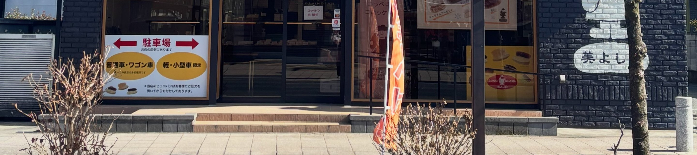
きょうは、何をお付けしましょう。
古河・本町の、こっぺパンの店です。
朝6時半から、売り切れ次第の店じまいです。月曜・火曜はお休み。駐車場は店の両側にございます。
当店のこっぺパンは、お客様にご注文を頂いてからお付けしております。店内の用紙に、ご入り用の数を数字でご記入ください。その紙をお預かりしてから、一本ずつ切って、お客様の前でお作りします。
オーダーぱん
お好きな詰め物で承ります
ご記入いただいてから、お作りします
この言葉がいちばん似合うこっぺパンをお作りしております。詰め物は、季節限定の品も合わせて二十二種類。お客様に多くお選びいただくのは、ピーナツ、あんマーガリン、ジャムマーガリンです。マーガリンの付け合せは、どの品にもお付けできます。
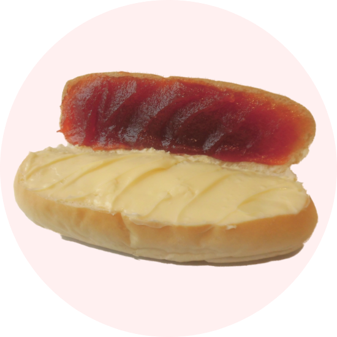
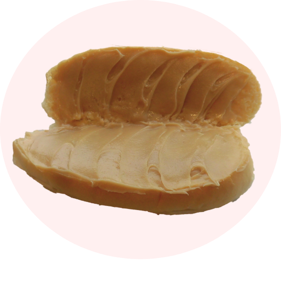
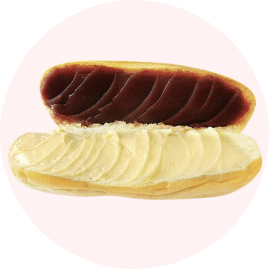
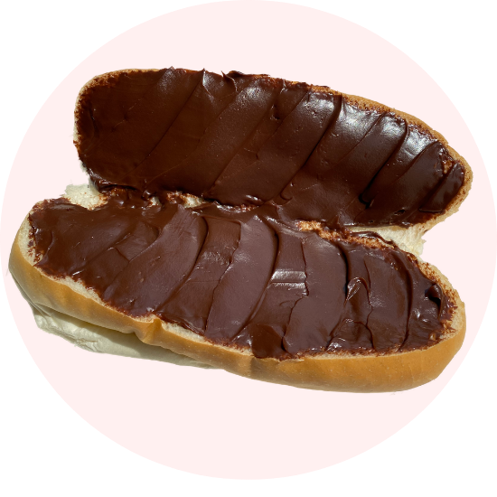
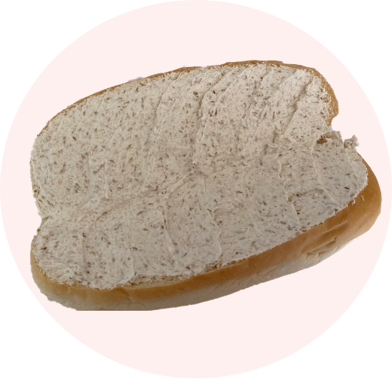
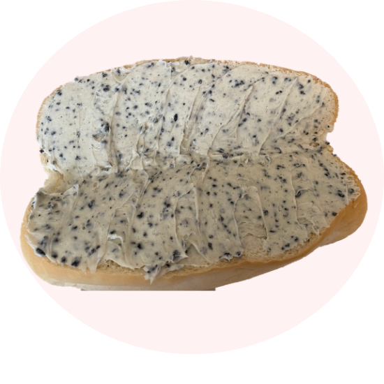
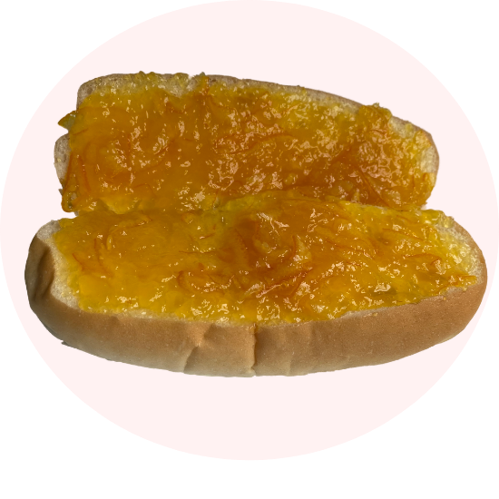
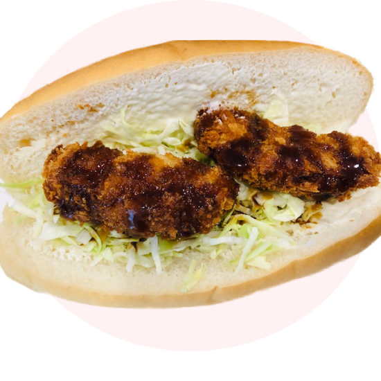
「コッペパンはパンが大きく中身も詰まっているのでかなりのボリュームで食べ応え有りますよ」
— お客様の声より
お好きなパンをお客様にお伺いしますと、いちばん多く名前が挙がるのがこのコロッケぱんです。当店のコロッケぱんはカレー味。古くからのお客様は、美よしののコロッケぱんはカレー味と、そうおっしゃってくださいます。キャベツをたくさん入れたミートコロッケも、あわせてご用意しております。
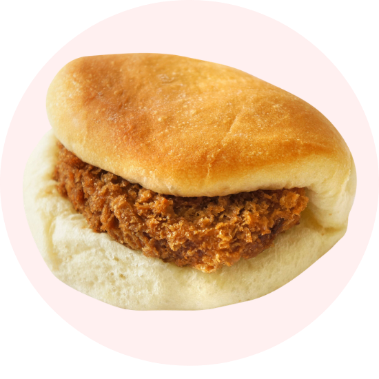
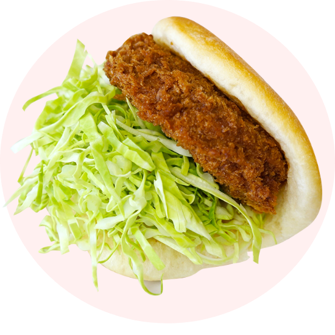
「すぐにコロッケパン食べちゃいましたが まずはパンがうまいです そしてコロッケもうまいです コロッケパンなのに軽いです これはいい」
— お客様の声より
朝六時半の開店に合わせて、パン作りは深夜一時に始まります。こっぺパンだけで、平日は500個、休日は800個。余計な添加物をなるべく入れず、その日の朝に焼いたパンだけを店頭に並べます。売り切れ次第、その日の店じまいです。
当店は明治四十年頃、東京・本郷で和菓子屋として始まりました。修業先からのれん分けで「美よし乃菓子店」の屋号を頂き、戦中の疎開で、昭和十八年にこの古河へ移っております。パン屋での修業を経てこっぺパンをお作りするようになり、それから半世紀。季節の変化、気温、湿度を日々肌で感じながら、先代から受け継いだ手法を守ってまいりました。
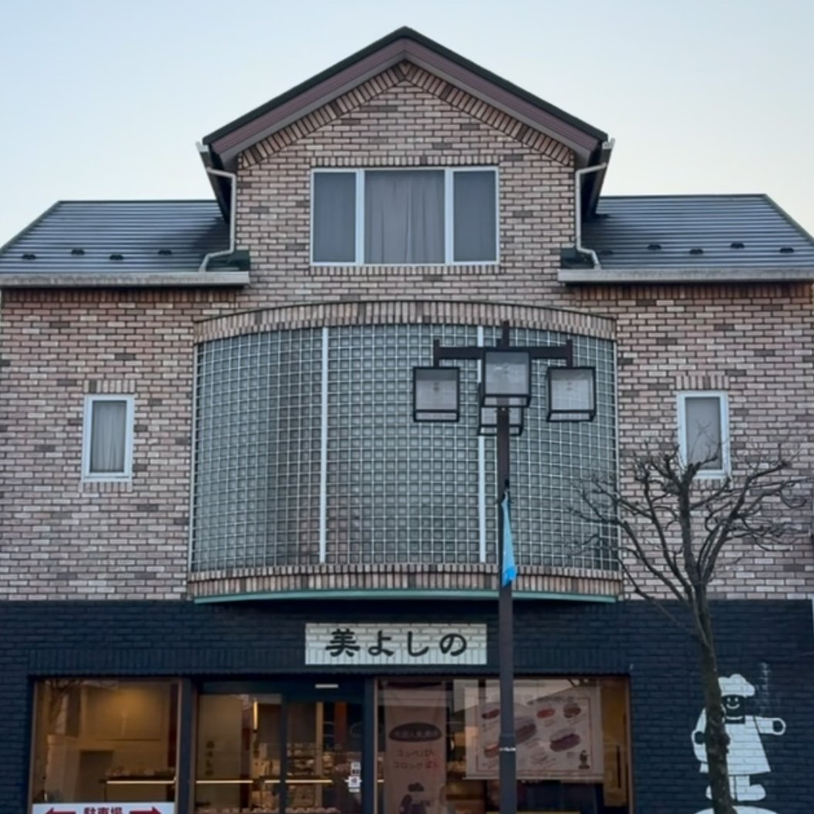
古河駅から歩いて十分ほどでございます。黒い壁に白い線で描いたパン職人の絵が目印です。お車の方は、店の両側に駐車場をご用意しておりますので、そちらをご利用ください。
| 住所 | 〒306-0023 茨城県古河市本町3丁目2-17 |
|---|---|
| 電話 | 0280-32-0748 |
| 営業時間 | 6:30〜 売り切れ次第終了 |
| 定休日 | 月曜日・火曜日 |
| 駐車場 | 有（店の両側） |
きょうも記入の用紙をご用意して、皆様をお待ちしております。